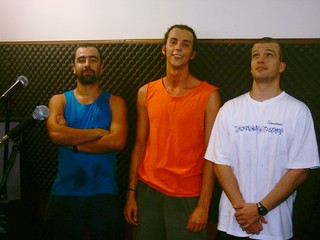
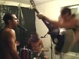
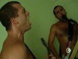
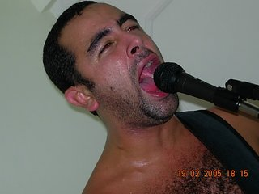
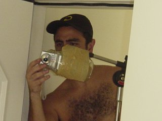
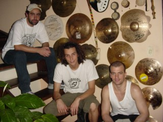
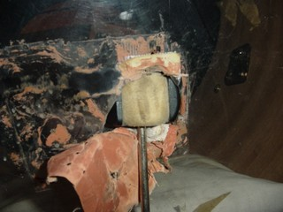
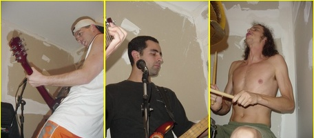
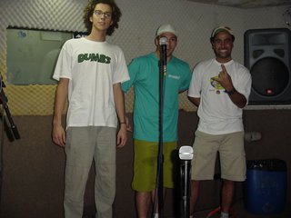

Já tem uma banda chamada CORRERIA em São Paulo e eles possuem o
registro desse nome. Como a nossa banda é para divertir e não para
estressar, mudamos o nome para CORRERIA HC.
Ensaio na casa do Aurelio. Fizemos uma música nova. O Nissin fez uma base
pesada e um refrão para uma letra sem métrica. Começamos a pirar em
cima e logo saíram as transições e a parte final. Ficou meio NYHC, mas
está massa. Ainda sem letra.
16 de Abril
Ensaio na casa do Aurelio. Tiramos a lona preta do MST e colamos espuma
acústica em duas paredes. Diminuiu bastante o ruído e a reverberação.
Talvez ainda precise mais espuma, vamos ver...
07 de Abril
O site da banda mudou-se para um servidor novo. Saímos do Geocities
com seus banners e limitação de acesso. Agora além de mais rápido, não
dará mais erro ao tentar baixar uma música ou vídeo.
Nossos agradecimentos ao Daniel Duclós, Rodrigo Bernardo Pimentel
(rbp) e todo o time do servidor CYBERSHARK.NET.
01 de Abril
Gravação no estúdio Passagem de Som. Aproveitamos o Dia da Mentira para fazer uma gravação
não-tão-tosca de nossas músicas e melhorar os MP3 do site. Sexta-feira,
calor, meio-dia (único horário que todos podiam). Foi uma hora de gravação
"ao vivo", com a sala microfonada, a banda toda tocando junta e sem
pós-edição. Depois chutamos o balde indo se entupir de carne na
churrascaria Divino Mestre.
Resultado: 10 músicas, 15 minutos (confira as MP3 novas)
Curtimos bastante o resultado, foi a primeira vez que conseguimos ouvir
direito nossas músicas :) A bateria ficou sem peso, tem erros, falhas de
vocal, emboladas, desandadas... a tosqueira continua.
Valeu Lucas pela gravação e apoio!

19 de Março
Ensaio na casa do Aurelio. Tinha aquela música antiga do Dumbs, a "Lesson One".
Fizemos uma letra nova para ela chamada "Mudar" e nosso repertório aumentou
:) Já está lá na seção de Letras.
05 de Março
Ensaio na casa do Aurelio, com paredes do MST. Colocamos um plástico preto na parede
para ver se diminuía a reverberação do som. Parece ter adiantado um
pouco. Algumas músicas foram filmadas na câmera digital e alguns trechos
foram colocados na seção de vídeo. Valeu Henrique pela filmagem!

25 de Fevereiro
Quer ver a banda? Foi criada a seção VÍDEO, com um trecho
do ensaio desse sábado. Sinta a energia e tosquice da CORRERIA.

19 de Fevereiro
Ensaio na casa do Aurelio, o primeiro depois de mais de dois meses de férias. A
tosqueira foi gravada em fita k7 e agora tem um MP3 melhor da música nova
"Correria". O dia estava quentão, o ensaio foi uma verdadeira sauna. Mas o
gás não pode parar. Valeu Kau pelas fotos!

Blog de 2004
04 de Dezembro
Ensaio na casa do Aurelio. Fizemos uma tentativa tosca de filmagem, apoiando a
câmera dentro de um pote de maionese, que estava preso num pedestal de
microfone com um durécão. Até que funcionou, só que demoramos tanto para
começar a tocar a música que a memória da câmera lotou antes mesmo da
primeira nota. Resultado: não filmou nada :)

06 de Novembro
Ensaio na casa do Aurelio. Foram 4 horas de suor e barulho. A música nova agora tem
letra, é a "Correria", nossa música tema da banda. Já está no ar a letra e
o mp3 (com qualidade de gravação horrível).
25 de Setembro
Ensaio no estúdio Passagem de Som. Fizemos uma música nova! O Fejão inventou na hora uma base
no baixo, o resto acompanhou e a música saiu inteira em poucos minutos.
Ainda sem letra.
18 de Setembro
Ensaio no estúdio Passagem de Som. Ah, tiramos aquele finalzinho gay da música "se liga e desliga".
Agora ela acaba meio no susto.
02 de Setembro
A amiga Fabianne Balvedi criou uma página para a banda no site
Trama Virtual. Boa alternativa para baixar os MP3 caso o Geocities esteja
negando
acesso. Valeu Fabi!
23 de Agosto
Site da banda no ar, endereço oficial: WWW.CORRERIA.ORG.

07 de Agosto
Ensaio no estúdio Áudio Grave. (gravado) Depois fomos nos confraternizar (chutar) no
show do CÓLERA no 92. Foi ANIMAL.
24 de Julho
Escolha do nome CORRERIA. Decidido em segundos, assim:
(Fejão) Tava pensando, a gente podia mudar o nome da banda pra Correria (Aurelio) Massa! (Nissin) Massa!
17 de Julho
Ensaio na casa do Aurelio. A empolgação foi tanta que a pele do bumbo não agüentou.
Coisa de pedrêro que não sabe tocar...

08 de Maio
Segundo ensaio, 3 meses depois na casa do Aurelio. Estamos voltando devagarinho, sem
estresse... Valeu Gracielle pelas fotos!

14 de Fevereiro
Primeiro ensaio após 3 anos de inatividade musical, desde o último
ensaio com o DUMBS. Com Aurelio, Fejão e Nissin no estúdio HMix. Olha a
posição estratégica do Nissin escondido atrás do microfone :)

Banda CORRERIA HC, Curitiba - PR
Hardcore Nervoso em Português
{kind=link}